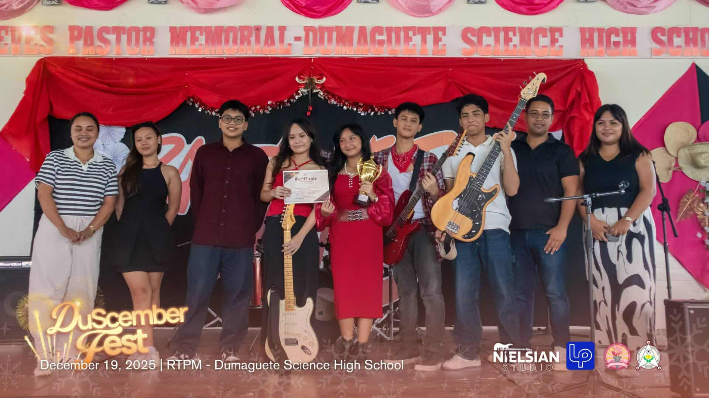
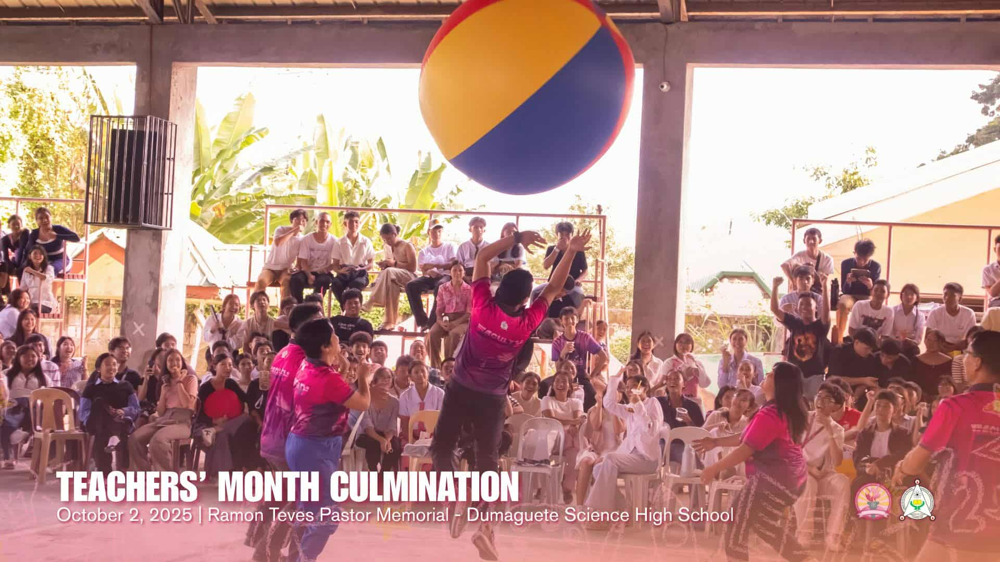
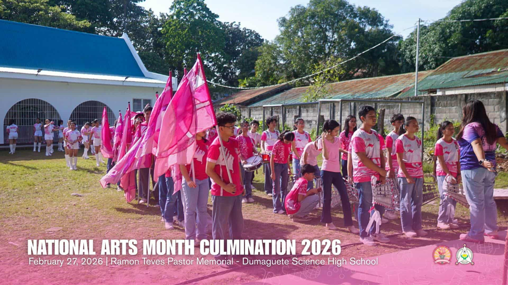

Ramon Teves Pastor Memorial – Dumaguete Science High School

The Ramon Teves Pastor Memorial - Dumaguete Science High School (RTPM-DSHS) was established in 1987 to provide quality science and mathematics education to the intellectually gifted students of Dumaguete City and Negros Oriental. Located at Maria Asuncion Village, Daro, Dumaguete City, the school has grown from a modest facility into a recognized center for advanced science education in Central Visayas. Named in honor of the late philanthropist Ramon Teves Pastor, the school continues his legacy of supporting educational excellence. Over the decades, RTPM-DSHS has produced countless graduates who have excelled in various fields of science, technology, engineering, and mathematics.

Vision:“We dream of Filipinos who passionately love their country and whose values and competencies enable them to realize their full potential and contribute meaningfully to building the nation. As a learner-centered public institution, the Department of Education continuously improves itself to better serve its stakeholders.”
Mission: “To protect and promote the right of every Filipino to quality, equitable, culture-based, and complete basic education where students learn in a child-friendly, gender-sensitive, safe, and motivating environment. Teachers facilitate learning and constantly nurture every learner.”
Dumaguete City, Philippines
Our curriculum is designed to nurture scientifically-inclined minds and prepare students for excellence in higher education and future careers.
A comprehensive curriculum focused on advanced science and mathematics education, preparing students for higher learning.
Subjects: ESP,English,Enhanced Science, Advanced Science, MAPEH, Enhanced Math, Advanced Math, Araling Panlipunan,Creative Tech,Filipino, Science Research
Science, Technology, Engineering, and Mathematics strand designed for students pursuing careers in science and technology fields.
Key Subjects: General Physics General Chemistry Pre-Calculus Basic Calculus Statistics & Probability Research Project
Gallery & Activities
Take a glimpse of our vibrant campus life, school events, and achievements.









We'd love to hear from you. Get in touch with us through any of the following channels.
Email: tristhanjosh020312@gmail.com
Location: Dumaguete City, Negros Oriental, Philippines
Group Name: Tech Wizards
Tristhan Vilos - Head Developer
Nathalie Almandres - Co Developer
Rain Nunez - Info Provider
Axil Baybay - Gallery Provider
Phryzee Otod - Info Provider
Ziljan Beltran - Support Providor